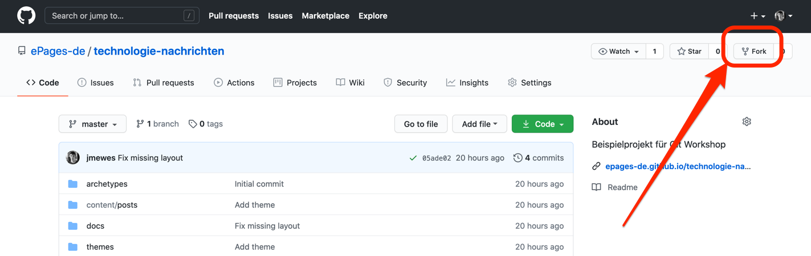
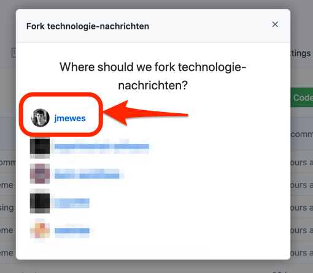
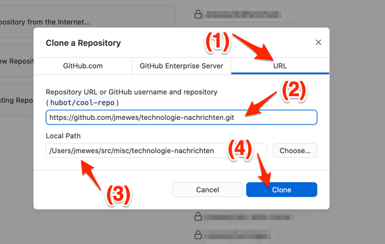
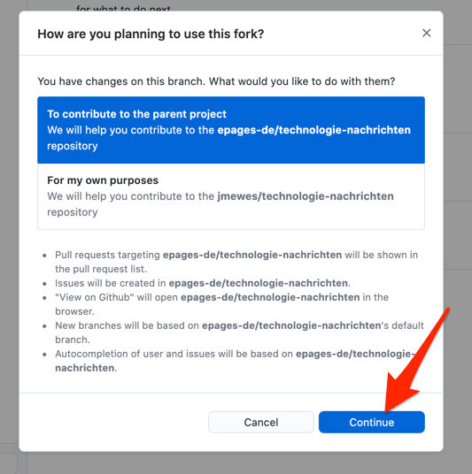
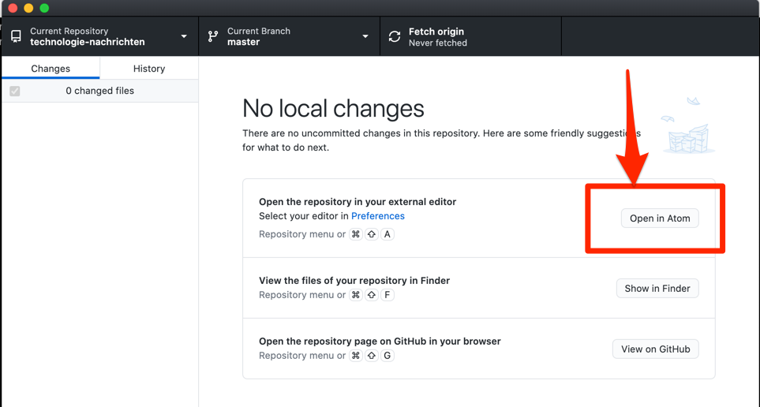
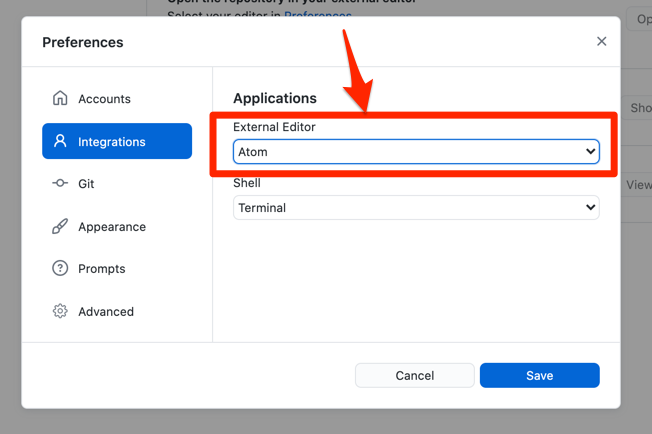

Einleitung
Das Ziel von diesem Tutorial ist es ein auf GitHub gehostetes Projekt auf den lokalen Rechner herunterzuladen.
Voraussetzungen
- GitHub Desktop wurde erfolgreich installiert.
- Bevor Sie mit dem Tutorial starten, sollte ein Texteditor wie VS Code, Atom oder Notepad++ auf Ihrem Rechner installiert sein.
Erstellung von Fork
Als Übungsprojekt werden wir im Folgenden das “Technologie Nachrichten” Projekt benutzen:
https://github.com/experimental-software/technologie-nachrichten
TODO: Das Repository muss noch angelegt werden.
Besuchen Sie die Projektseite und klicken Sie dann auf den “Fork” Button rechts oben auf der Webseite.

Wählen Sie in dem sich daraufhin öffnenden Dialog Ihren privaten GitHub Account als Ziel für den Fork aus.

Nachdem die Fork Aktion fertig ist, klicken Sie auf den grünen “Code” Button und kopieren Sie sich dann die angezeigte HTTPS Clone URL.

git clone
Öffnen Sie nun GitHub Desktop und wählen Sie den Menüpunkt “File > Clone Repository” aus.

Führen Sie in dem sich daraufhin öffnenden Dialog folgende Schritte durch:
- Wechseln Sie zu dem Tab “URL”
- Tragen Sie in dem Eingabefeld für die Repository URL die im vorherigen Schritt kopierte HTTPS Clone URL ein
- Prüfen Sie, dass das Projekt an eine geeignete Stelle auf Ihrem Rechner heruntergeladen wird. Ggf. Können Sie über den Button rechts von dem Eingabefeld ein anderes Zielverzeichnis auswählen.
- Bestätigen Sie den “git clone” mit einem Klick auf den blauen “Clone” Button.

Wenn GitHub Desktop Sie daraufhin fragt, was Sie mit dem Fork vorhaben, bestätigen Sie, dass Sie Kontributionen zu dem ursprünglichen Projekt vorhaben.

Öffnen von lokalen Dateien
Wenn Ihr Texteditor richtig von GitHub Desktop erkannt wurde, können Sie nach der Verarbeitung von dem “git clone” Befehl einen Button mit der Beschriftung “Open in ”, in dem folgenden Beispiel “Open in Atom”:

Tipp: Der von GitHub Desktop bevorzugte Texteditor lässt sich in den Einstellungen von GitHub Desktop ändern.

Daraufhin sollte sich der von Ihnen bevorzugte Texteditor in dem Verzeichnis von dem Übungsprojekt öffnen.